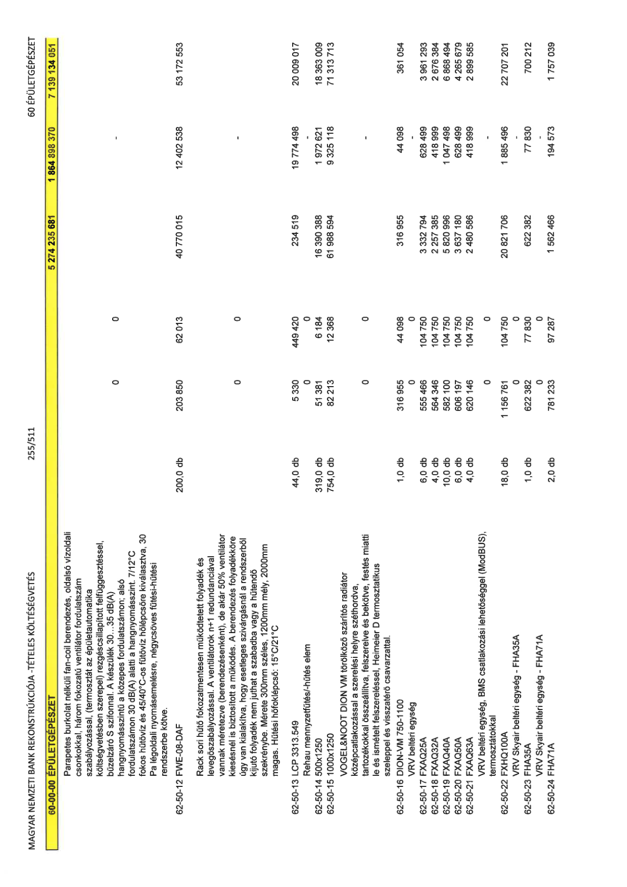

| Tétel | Menny. | Egys. | Anyag e.ár (net HUF) | Díj e.ár (net HUF) | Anyag összesen (net HUF) | Díj összesen (net HUF) | Anyag+Díj összesen (net HUF) |
|---|---|---|---|---|---|---|---|
| Parapetes burkolat nélküli fan-coil berendezés, oldalsó vízoldali csonkokkal, három fokozatú ventilátor fordulatszám szabályozással, (termosztát az épületautomatika költségvetésben szerepel) rezgéscsillapított felfüggesztéssel, bűzelzáró S szifonnal. A készülék 30...35 dB(A) hangnyomásszintű a közepes fordulatszámon; alsó fordulatszámon 30 dB(A) alatti a hangnyomásszint. 7/12°C fokos hűtővíz és 45/40°C-os fűtővíz hőlépcsőre kiválasztva, 30 Pa légoldali nyomásemelésre, négycsöves fűtési-hűtési rendszerbe kötve. | 0 | 0 | 0 | 0 | 0 | 0 | 0 |
| 62-50-12 FWE-08-DAF | 200,0 | db | 203 850 | 62 013 | 40 770 015 | 12 402 538 | 53 172 553 |
| Rack sori hűtő fokozatmentesen működtetett folyadék és levegőszabályozással. A ventilátorok n+1 redundanciával vannak méretezve (berendezésenként), de akár 50% ventilátor kiesésnél is biztosított a működés. A berendezés folyadékköre úgy van kialakítva, hogy esetleges szivárgásnál a rendszerből kijutó folyadék nem juthat a szabadba vagy a hűtendő szekrénybe. Mérete 300mm széles, 1200mm mély, 2000mm magas. Hűtési hőfoklépcső: 15°C/21°C | 0 | 0 | 0 | 0 | 0 | 0 | 0 |
| 62-50-13 LCP 3313.549 | 44,0 | db | 5 330 | 449 420 | 234 519 | 19 774 498 | 20 009 017 |
| Rehau mennyezetfűtés/-hűtés elem | 0 | 0 | 0 | 0 | 0 | 0 | 0 |
| 62-50-14 500x1250 | 319,0 | db | 51 381 | 6 184 | 16 390 388 | 1 972 621 | 18 363 009 |
| 62-50-15 1000x1250 | 754,0 | db | 82 213 | 12 368 | 61 988 594 | 9 325 118 | 71 313 713 |
| VOGEL&NOOT DION VM törölköző szárítós radiátor középcsatlakozással a szerelési helyre széthordva, tartozékokkal összeállítva, felszerelve és bekötve, festés miatti le és ismételt felszereléssel, Heimeier D termosztatikus szeleppel és visszatérő csavarzattal. | 0 | 0 | 0 | 0 | 0 | 0 | 0 |
| 62-50-16 DION-VM 750-1100 | 1,0 | db | 316 955 | 44 098 | 316 955 | 44 098 | 361 054 |
| VRV beltéri egység | 0 | 0 | 0 | 0 | 0 | 0 | 0 |
| 62-50-17 FXAQ25A | 6,0 | db | 555 466 | 104 750 | 3 332 794 | 628 499 | 3 961 293 |
| 62-50-18 FXAQ32A | 4,0 | db | 564 346 | 104 750 | 2 257 385 | 418 999 | 2 676 384 |
| 62-50-19 FXAQ40A | 10,0 | db | 582 100 | 104 750 | 5 820 996 | 1 047 498 | 6 868 494 |
| 62-50-20 FXAQ50A | 6,0 | db | 606 197 | 104 750 | 3 637 180 | 628 499 | 4 265 679 |
| 62-50-21 FXAQ63A | 4,0 | db | 620 146 | 104 750 | 2 480 586 | 418 999 | 2 899 585 |
| VRV beltéri egység, BMS csatlakozási lehetőséggel (ModBUS), termosztátokkal | 0 | 0 | 0 | 0 | 0 | 0 | 0 |
| 62-50-22 FXHQ100A | 18,0 | db | 1 156 761 | 104 750 | 20 821 706 | 1 885 496 | 22 707 201 |
| VRV Skyair beltéri egység - FHA35A | 0 | 0 | 0 | 0 | 0 | 0 | 0 |
| 62-50-23 FHA35A | 1,0 | db | 622 382 | 77 830 | 622 382 | 77 830 | 700 212 |
| VRV Skyair beltéri egység - FHA71A | 0 | 0 | 0 | 0 | 0 | 0 | 0 |
| 62-50-24 FHA71A | 2,0 | db | 781 233 | 97 287 | 1 562 466 | 194 573 | 1 757 039 |
